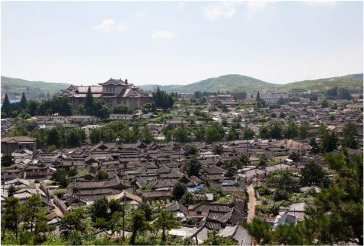
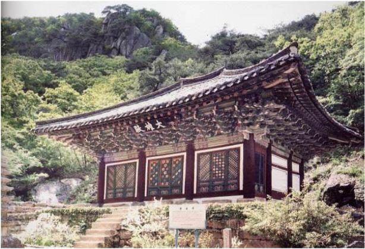
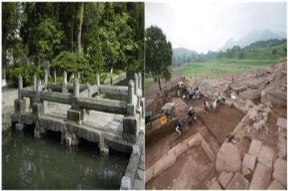
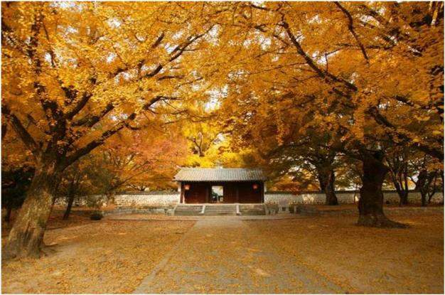

당신은 끊임없이 새로운 지식을 원하는 혁신가!
당신에게 추천하는 여행지
개성한옥보존지구
고려의 수도였던 개성에는 한옥 300채 가량이 온전하게 운집한 형태로 보존되어있다. 한국전쟁시기, 휴전협정이 개성에서 진행되어 미군의 폭격을 피했고 덕분에 많은 한옥들이 그대로 살아남을 수 있었다. 이곳의 한옥은 보존상태도 좋을 뿐만아니라 마을 뒷편에는 오공산 자락이 앞쪽에는 배천이 흘러 배산임수의 전통적인 마을 형태를 띠고 있다. 개성한옥은 조선시대 초기부터 구한말까지 지어져 한옥변천사를 한눈에 확인할 수 있어 보존가치가 높다. 또한 서울한옥과 달리 특징이 뚜렷해 보존지구로 지정되었다.
관음사
박연폭포 뒷골짜기에 있는 절로 현존하는 개성의 대표적 사찰 가운데 한 곳이다. 970년 고려 태조 왕건 때 지어졌고 임진왜란 때 전소된 이후 1646년에 다시 지었다. 현재는 대웅전, 승방, 칠층석탑과 관음사가 창건되기 전부터 있었다는 관음굴이 있다.
선죽교/만월대
선죽교는 고려 말, 충신 정몽주가 피살된 곳이다. 다리 위 돌에 붉은 반점이 정몽주의 피얼룩이라 전해진다. 고려시대에는 난간이 없는 다리였으나 조선시대에 정몽주의 후손들이 난간을 설치하여 통행을 막고 옆에 새로운 돌다리를 설치했다. 만월대는 고려의 정궁터로 송악산 기슭에 있다. 1362년 홍건적의 난으로 완전히 소실 되었다. 수차례 남북공동발굴을 해왔으며 2007년 이후 7차례 진행되었다.
개성고려박물관
고려시대 교육관이던 실제 성균관과 18동의 건물을 개·보수하여 1988년 9월에 정식으로 개관했다. 실내전시와 야외전시구역으로 나누어 전시하고 있으며 실내전시관은 4개관이다.